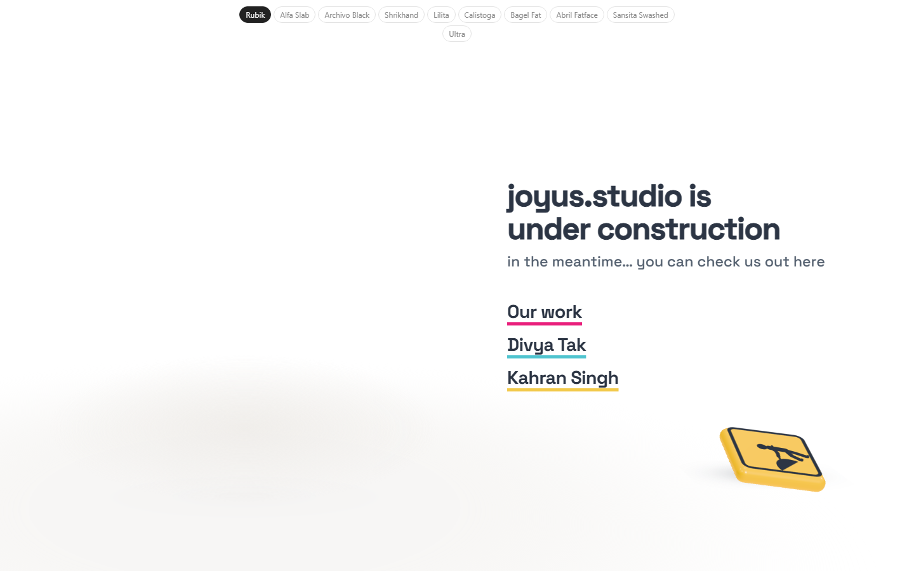
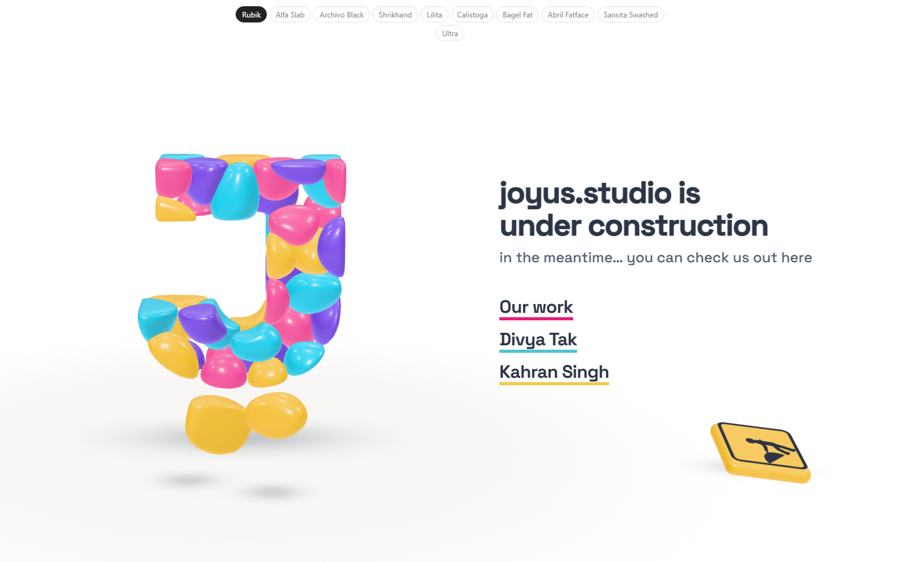
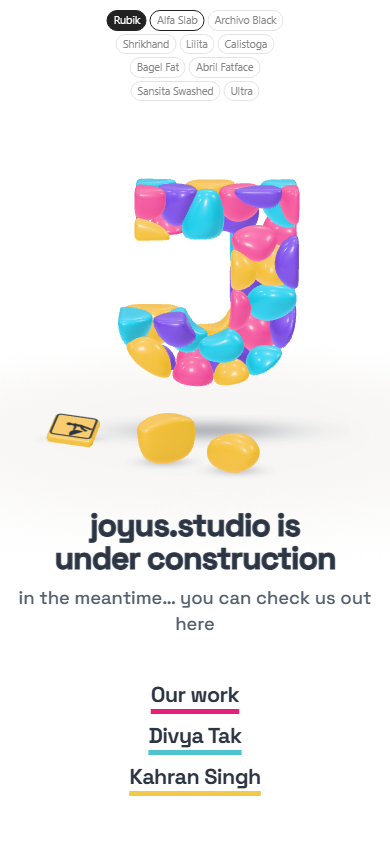

Study 41 · 13 October 2026
A graceful first load
Before: nothing until three.js had downloaded and all forty stones were meshed. Now: the words at once with a soft floor in CSS; the worker starts before three.js arrives; the floor and the sign appear as soon as the renderer is up; each stone flies in the moment it is meshed; the two that fall out are chosen last and change course to the floor.
Open the page (reload to watch it)As it happens


Measured
Milliseconds since navigation, median of three loads each, software Chrome (several times slower than a laptop, and noisy: loads ran back to back). "Page loaded" is the browser's load event, which in Study 40 waits for the whole build. "Cold" clears the browser cache first, so three.js (about 170 KB over the wire) downloads again.
| Page loaded | First stone | All forty |
|---|
The remaining wait on a cold load is three.js itself; the CSS floor and the words cover it. Warm, the scene is up well under half a second.
The page

Open
- Nothing from you: this goes live as is unless you'd rather the stones waited for one another.
Timings: load-timing.json. Pictures: shoot.mjs. Test: page-test.mjs, 56 checks in a browser; read by check.cjs.